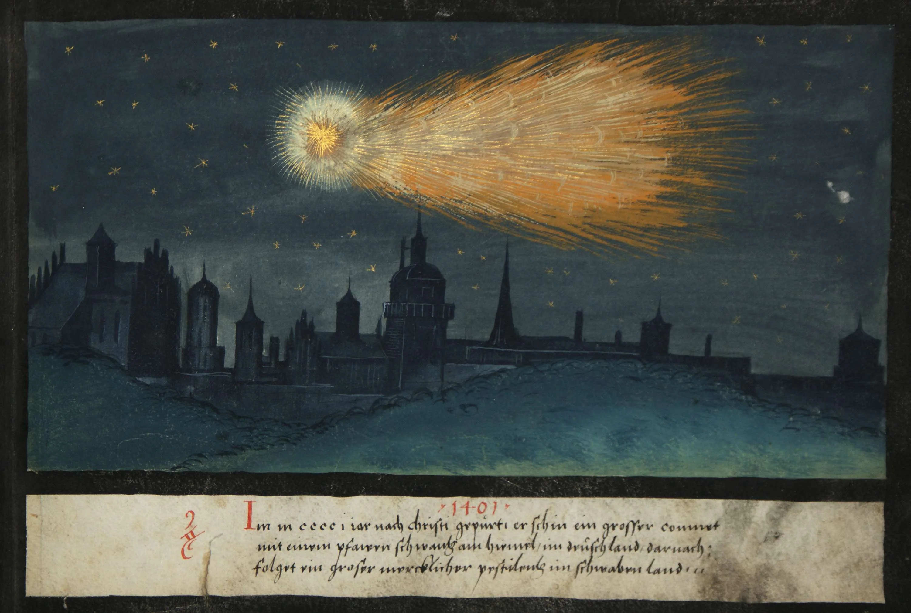
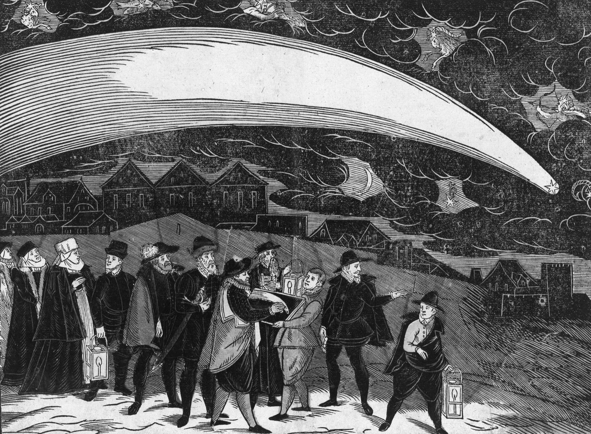

On a clear afternoon in 1554, the people of Strasbourg looked up and saw soldiers. Hundreds of them, on horseback, armed and armoured, moving in formation across the sky. The phantom cavalry wheeled and charged for hours. Then they rode off toward the horizon and disappeared.
No one panicked. Or rather, everyone panicked in the expected way. The citizens of Strasbourg understood what they were seeing. God was speaking. The question was only what he meant.
For most of European history, the sky was a text. Comets, eclipses, meteor showers, strange lights, phantom armies: all of it could be read, if you knew the grammar. The grammar was theology. A comet did not simply burn across the night. It announced plague, war, the death of princes. When Halley's Comet appeared in 1066, the Bayeux Tapestry recorded it as a sign that Harold's kingship was doomed. Seven centuries later, the same comet still made people nervous.
The word for this kind of sign was "prodigy." Not in the modern sense of a gifted child, but in the older Latin sense: a thing sent ahead, a warning. The sky was full of prodigies, and the people who recorded them believed they were doing important work.
The sky as sermon
The genre had a name. Cometography. Starting in the late fifteenth century, printed broadsheets began circulating accounts of celestial events across German-speaking Europe. A comet over Basel in 1472. Strange suns over Vienna. Blood-red clouds above Wittenberg. Each broadsheet combined a woodcut illustration with a short text explaining what the sign portended. The format was cheap, portable, and wildly popular.

These were not scientific reports. They were sermons in visual form. The theological framework was straightforward: God created the natural world, and he could alter it at will to communicate with humanity. A comet was a letter written in fire. An eclipse was a sentence of judgement. The preacher's job was translation.
Martin Luther thought comets were thrown by the devil but permitted by God. Philip Melanchthon collected prodigy accounts with the seriousness of a research librarian. Conrad Lycosthenes published his Prodigiorum ac Ostentorum Chronicon in 1557, a massive compendium of signs and wonders from antiquity to his own era, illustrated with hundreds of woodcuts. The book was a bestseller. Readers could flip through centuries of divine anger in a single afternoon.
The appeal was not hard to understand. Reformation Europe was tearing itself apart over questions of doctrine, authority, and salvation. If God was still sending messages, then perhaps the chaos had a plot. Perhaps someone could read the ending in the sky.
These terrible apparitions and prodigies are certain signs that the Last Day is not far off, and that Christ our Lord will come to judge the world.
Conrad Lycosthenes, Prodigiorum Chronicon, 1557
The 1554 Strasbourg vision fit the pattern exactly. Phantom armies had been reported across Europe for centuries: celestial battles above Nuremberg in 1561, marching troops over Verdun in 1523. Each sighting carried the same message. God was marshalling his own forces. The faithful should prepare.
From omen to orbit
The Great Comet of 1577 cracked the framework. Tycho Brahe, working from his observatory on the island of Hven, measured the comet's parallax and proved it was farther away than the Moon. This was a problem. Aristotle had taught that comets were atmospheric phenomena, exhalations burning in the upper air. If the comet was beyond the Moon, it was moving through the celestial spheres themselves, the crystal shells that carried the planets. The spheres, it turned out, were not solid. They might not exist at all.

Brahe himself did not abandon the prodigy tradition. He still thought the comet meant something. But his measurements opened a door that could not be closed. Once a comet became an object with a measurable distance, it became harder to treat it as a divine telegram. The sky was still strange, but it was starting to become a laboratory.
Edmond Halley finished the job, or at least the most visible part of it. In 1705 he published his Synopsis of the Astronomy of Comets, arguing that the comets of 1531, 1607, and 1682 were the same object on a regular orbit. He predicted it would return around 1758. It did, sixteen years after his death. The comet that had once announced the fall of kings now had a schedule.
The broadsheets did not stop overnight. Prodigy literature continued well into the eighteenth century, especially in rural areas where print culture moved slowly. But the genre lost its authority. A comet with a known orbit is hard to fear. You can put it on a calendar.
Still, something was lost in the translation from omen to orbit. The people of Strasbourg, watching phantom riders dissolve into cloud, lived in a world where the sky could speak. The message might be terrifying, but at least there was a message. Halley's comet returns every seventy-five years or so, punctual and silent. It crosses the sky and tells us nothing at all.